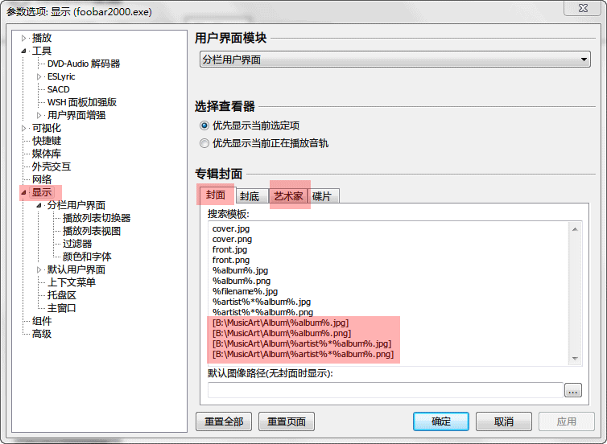
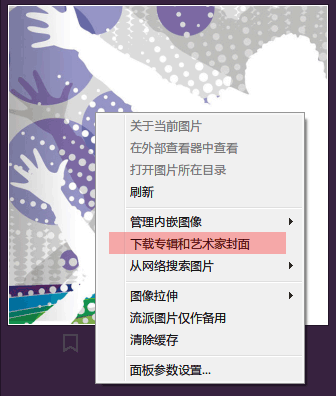

歌曲封面设置及下载
foobox 支持内嵌封面，外置封面，具有独特的流派封面。封面浏览器具有缓存封面的功能，支持 jpg 和 png 格式。
【内嵌封面】
内嵌封面一般无需设置，foobox 会自动读取。
如果你很多歌曲封面是内嵌在disc标签里（如许多网易云下载的歌曲），你可以进去foobox设置里勾选以下这一项，当然这可能会增加一点点系统资源开销。
【外置封面】
对于外置封面，foobox 已经预设好封面的路径，你可以到参数选项进行查看或修改。
打开 foobar2000 参数选项对话框（主菜单--文件--参数选项，或 control+p， 或 foobox 设置面板最下面的按钮打开）
图中是封面页面，高亮的路径是 foobox 推荐的外置封面放置目录，注意还有一个艺术家页面也有相似设定。
foobox 默认的 front 和 artist 封面路径是位于 foobar2000 根目录下的 MusicArt 里的 Album 和 Artist 文件夹。
集中放置的好处还有就是便于封面浏览面板（封面列表浏览面板，并非右栏封面面板）进行缓存，提高速度。
如果你修改了上面 foobar2000 里的封面读取路径，你需要相应地修改封面浏览面板的设置。
打开 foobox 设置，进入封面浏览面板页面，
这里的路径设置必须和刚才 foobar2000 参数选项里的封面设置对话框里的路径一致 （仅路径，不含文件名）。
【流派封面】
从5.12版开始，流派封面实现了智能匹配，比如流派封面是Pop.jpg，无论你的流派名称是“POP”还是“流行”，都可以匹配到 Pop.jpg。需要自定义更多匹配的用户可编辑 Foobar2000\themes\foobox\js_common\Genre.js 里面的GenrePack对象，非常简单。
foobox 流派封面图片默认的存放目录是位于 foobar2000 根目录下的 MusicArt 里的 Genre 文件夹。
【目录封面】
在歌曲文件夹下放置 cover.jpg 或 cover.png 可作为目录封面，用于播放列表和封面浏览面板按目录分组时显示该封面。
【专辑封面和艺术家封面下载】
封面浏览面板顶栏提供一键下载封面功能，可以下载专辑封面和艺术家封面。点击时会识别缺少封面的歌曲进行批量下载。
当然如果你的歌曲标签信息不完整，比如缺少 %album% 或 %artist% (%album artist%) 标签是不能确保正确匹配到相应的封面的。
右键菜单 (专辑模式和艺术家模式下) 可以单独下载该封面，这是强制下载的，覆盖已有封面。
艺术家封面每次下载都有可能不同，会随机在服务器下载已有的几张封面中的一张，如果你对艺术家封面不满意，可以在这里强制下载。
右栏封面面板右键菜单也可以手动下载专辑和艺术家封面，foobox 会自动识别所缺少的封面类型，如果专辑和艺术家图片都齐全，该菜单不会显示。
---The End---